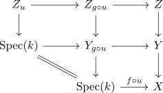

left cancellation property of morphisms of locally finite presentation
Proposition
Let $Z \xrightarrow{g} Y \xrightarrow{f} X$ be two maps between algebraic functors. Suppose that $f \circ g$ and $f$ are morphisms of locally finite presentation. Then $g$ is also a morphism of locally finite presentation
Proof
Let $u: \mathrm{Spec}(k) \rightarrow Y$ be any k-point. Then there exists a pullback diagram

now by assumption, $Y_{g \circ u}$ and $Z_{g \circ u}$ are of locally finite presentation, as is $\mathrm{Spec}(k)$. Hence so is $Z_u$ (cf. locally finitely presented algebraic functors are closed under finite limits).